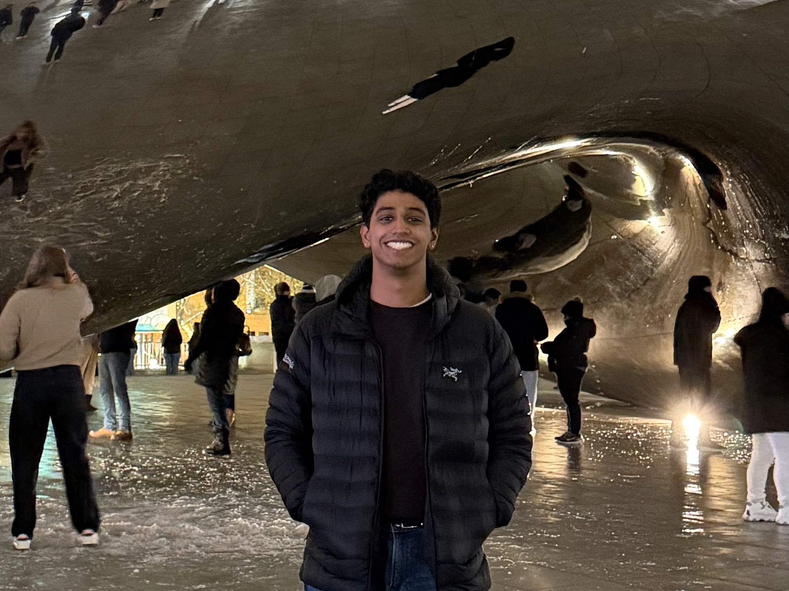

Contact Information
Office: SEO 735
E-mail: sravi42 (at) uic (dot) edu

About Me
Hi! My name is Shyam Ravichandran and I’m a third-year Ph.D. Candidate in Mathematical Computer Science. I am fortunate to be advised by Vishesh Jain and Lev Reyzin. My research interests are broadly centered in Probability, Combinatorics, and Algorithms, and their applications to Theoretical Computer Science. Previously, I was undergrad at Purdue University where I majored in Applied Mathematics and Statistics.
Publications
Teaching
Outreach and Service
Interactive Teaching Tools
Current Research Interests
Probability Theory, Probabilistic Combinatorics, Theoretical Computer Science, Machine Learning